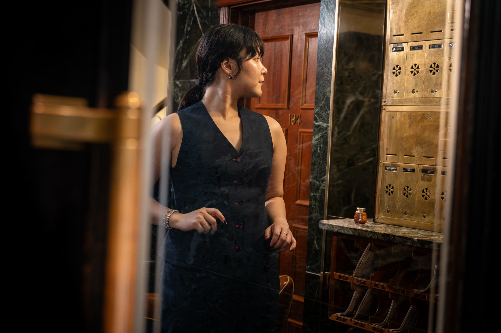
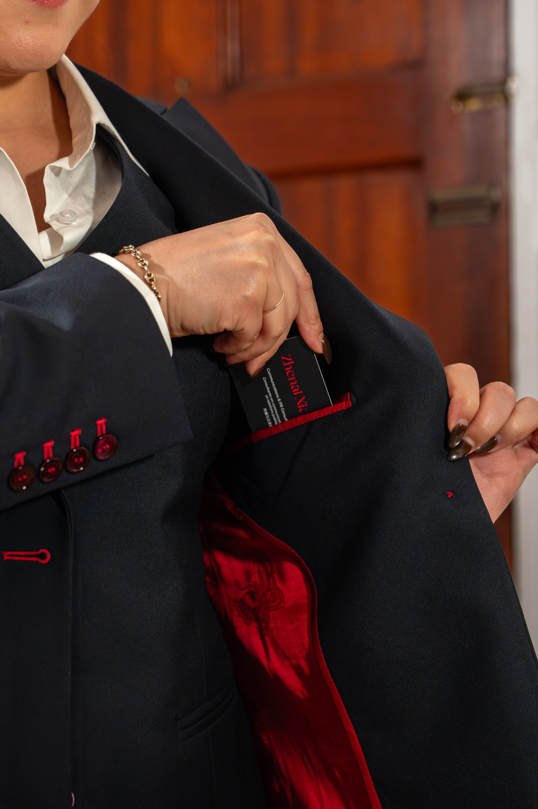
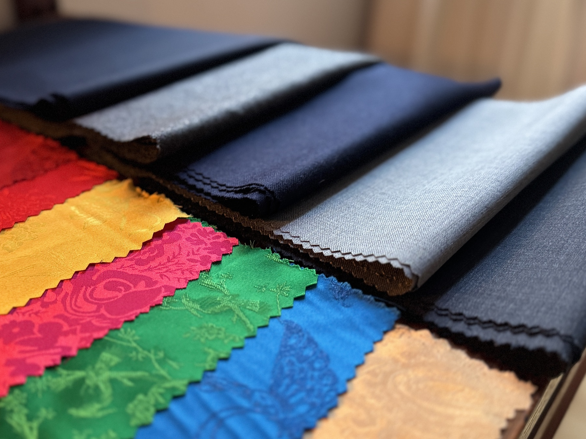

外灘洋服 · Montréal
The art of Shanghai tailoring,
The art of Shanghai tailoring,
made for you.
Custom suits from
$899 CAD


One client at a time, measured by a seamstress's hand. Over tea, we find the signature that suits you and shape it to your body, reading posture and proportion the way no scanner can. For a fit that is truly yours.
Every suit is canvassed and hand-finished in the Shanghai–Hong Kong tradition, by master tailors trained in its craft. Built to hold its line, and to last the years.
No one is built to a standard pattern. We cut for the shoulders you have and the posture you carry, so the suit is shaped to you, and never you to it.
Bold linings, contrast stitching, buttons of ceramic and horn, custom embroidery — the details that elevate your suit in an instant, and make it no one else's. Discover the full selection at your appointment.
A Qing-dynasty scholar wrote that “tailors are found everywhere, especially in Ningbo.” From this coastal city along the Fenghua River came the artisans who would master the Western suit. They earned their name from the men they dressed — Westerners the Chinese then called the “red-haired,” 紅毛 — and so became the Hongbang, the Red Band: the tailors of the red-haired foreigners. A craft learned where two worlds met.
Every detail can be personalized. These house styles are simply our recommendation: the effortless choice for an elegant design.
Tap any marked point to see what defines each design
Every suit is canvassed and hand-finished by the same master tailors. Below, what each cloth is made for. Yours is chosen in person, at your appointment.
One adjustment included with every suit.
All our prices include tax.

Business on the outside. Party on the inside.
The one you travel in.
Folds into a carry-on and comes out ready, so you can step off a long flight and directly into the meeting. The polyester allows creases to fall out overnight on the hanger.
50% wool, 50% polyester
For the weeks that move.
The one you wear five days a week.
Machine washable at home, so it keeps pace with the week instead of waiting on the dry cleaner. Wool character, and none of the upkeep.
70% wool, 30% polyester
For the ordinary Tuesday.
The one that ages with you.
Pure wool, breathable across the seasons. It takes shape under heat and steam, settling into the shoulders you have and keeping that line for years.
100% wool
For the years to come.
Every cloth in the house runs between 275 and 300 grams, a weight that carries through the seasons and holds a press.
Every lining is a jacquard, no two patterns alike, and the stitching follows its colour.
An hour by appointment, in a private Montréal atelier. Over tea, we talk about what you need from a suit and what has never been quite right, to determine the house style for you.
A seamstress takes your measurements by hand, reading posture and proportion the way no scanner can. Then we choose the cloth, the lining and the finishings that define your suit.
Your suit is cut and hand-finished in the Shanghai–Hong Kong tradition, built to hold its line long after it leaves the bench. Four to five weeks, start to finish.
A final fitting at the atelier with our seamstress, so your suit sits exactly as it should, and becomes the one you reach for first. It can also be mailed to you.

A private experience and a heritage craft, for a suit cut for you alone. Book your hour with us.